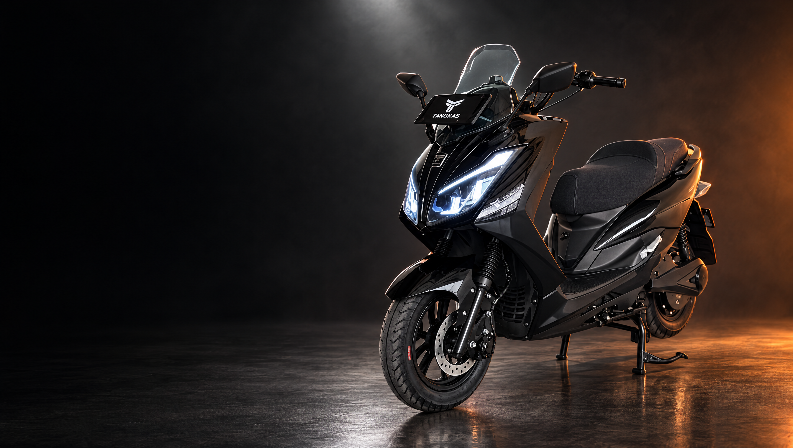

RIDING NUSANTARA 2026
BUKAN SEKADAR
DI ATAS KERTAS.
Perjalanan lintas Jawa–Bali membuka cerita lain tentang motor listrik. Mengenal jalan, berhenti mengisi energi, lalu kembali bergerak.
Baca cerita TangkasCILEGONSEMARANGSURABAYABALI
Perjalanan bertahap dengan pengisian ulang, bukan jarak dalam sekali pengisian.